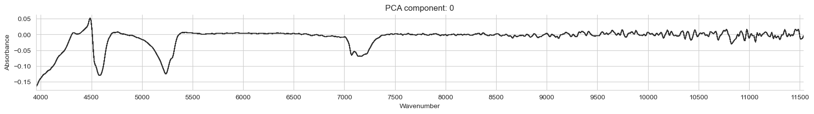
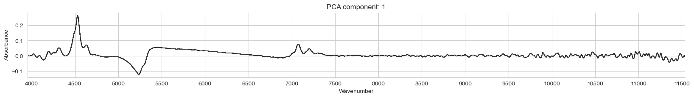
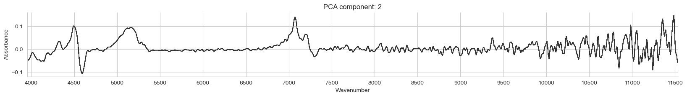
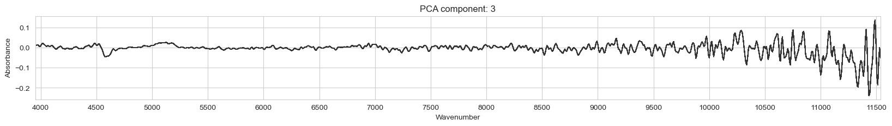
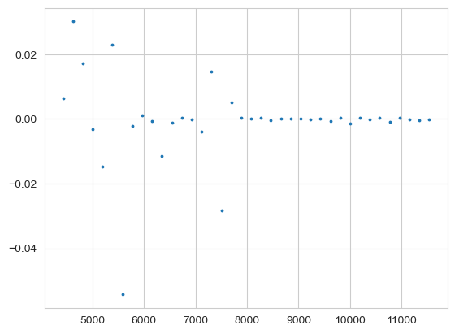

The autoreload extension is already loaded. To reload it, use:
%reload_ext autoreloadThe autoreload extension is already loaded. To reload it, use:
%reload_ext autoreloadfrom pathlib import Path
from sklearn.pipeline import Pipeline
from lssm.loading import load_nir_kex_spike, load_mir_kex_spike
from lssm.preprocessing import (ContinuumRemoval, SpikeDiff,
TakeDerivative, MeanCenter, MinScaler, BaselineALS)
from lssm.visualization import plot_spectra
from sklearn.decomposition import PCA, KernelPCA
import warnings
warnings.filterwarnings('ignore')smp_type = 'MIR'
if smp_type == 'MIR':
src_dir = Path().home() / 'pro/data/k-spiking/mir'
X, wavenumbers, names = load_mir_kex_spike(src_dir)
else:
fname = Path().home() / 'pro/data/k-spiking/nir/2023-12-8 _FT-NIR-K-spiked soil.xlsx'
X, wavenumbers, names = load_nir_kex_spike(fname)
print('X shape: ', X.shape)
print('First 10 wavenumbers: ', wavenumbers[:10])
print('First 5 names: ', names[:5])X shape: (58, 1738)
First 10 wavenumbers: [649.8933 651.8218 653.7502 655.6787 657.6072 659.5356 661.4641 663.3926
665.321 667.2495]
First 5 names: ['LUI-0-0' 'LUI-0-1' 'LUI-0-2' 'LUI-0-3' 'LUI-0-4']pipe = Pipeline([
('cr', ContinuumRemoval(wavenumbers)),
('diffs', SpikeDiff(names))])
pipe = Pipeline([
('cr', BaselineALS()),
('diffs', SpikeDiff(names))])
pipe = Pipeline([
('cr', BaselineALS())])
pipe = Pipeline([
('center', MeanCenter())])
# pipe = Pipeline([
# ('derivative', TakeDerivative(window_length=31)),
# ('diffs', SpikeDiff(names))])
# pipe = Pipeline([
# ('derivative', TakeDerivative(window_length=21))
# ])
# pipe = Pipeline([
# ('diffs', SpikeDiff(names))])
X_t = pipe.fit_transform(X)ValueError: n_components=20 must be between 0 and min(n_samples, n_features)=19 with svd_solver='full'array([5.51161925e-01, 3.48602906e-01, 4.60045802e-02, 2.03908606e-02,
1.31630669e-02, 1.16894510e-02, 8.98721047e-03, 2.15292678e-32,
1.08026427e-32, 9.04828643e-33, 5.39038810e-33, 4.44948330e-33,
2.09743403e-33, 1.30717186e-33, 8.49895788e-34, 4.98273106e-34,
4.27562239e-34, 3.40220654e-34, 2.46449058e-34, 2.29855829e-34])array([0.55116193, 0.89976483, 0.94576941, 0.96616027, 0.97932334,
0.99101279, 1. , 1. , 1. , 1. ,
1. , 1. , 1. , 1. , 1. ,
1. , 1. , 1. , 1. , 1. ])[7168.458781362007, 7067.137809187279, 4618.937644341801, 4531.037607612143][4531.037607612143, 4264.392324093817, 4081.6326530612246][5230.125523012553, 4531.037607612143, 4484.304932735426]for i in range(4):
plot_spectra(pca.components_[i,:][None,:], wavenumbers,
alpha=0.8, color='#333',
title=f'PCA component: {i}',
ascending=True,
figsize=(20, 2))<Figure size 640x480 with 0 Axes>



idx = 2
coeffs = pywt.wavedec(spectrum, wavelet_name)
plt.scatter((wavenumbers[::len(wavenumbers)//len(coeffs[idx])])[:len(coeffs[idx])], coeffs[idx], s=3)<matplotlib.collections.PathCollection at 0x13e39e690>
approximation = coeffs[0] # The first element of the list 'coeffs' is the approximation coefficients
# Detect peaks in the approximation coefficients
# This is a simplistic approach; you might need a more sophisticated peak detection algorithm
peaks, _ = find_peaks(approximation)
# Get peak heights from the original spectrum
# Map peak indices from approximation to original signal, if necessary
# This mapping would depend on the level of decomposition and the wavelet used
original_peaks = peaks * (len(spectrum) // len(approximation))
peak_heights.extend(spectrum[original_peaks])
# Convert list to numpy array
peak_heights = np.array(peak_heights)
# Plot the results
plt.figure(figsize=(12, 6))
plt.plot(peak_heights, 'x', label='Peak Heights')
plt.xlabel('Sample Index')
plt.ylabel('Peak Height')
plt.title('Peak Heights Extracted from DWT')
plt.legend()
plt.show()import numpy as np
import pywt
import matplotlib.pyplot as plt
from scipy.signal import find_peaks
spectra = X[
# Assuming 'spectra' is your array of spectral data
# Each row in 'spectra' corresponds to a spectrum
# Choose a wavelet
wavelet_name = 'db5' # Daubechies wavelet with 5 vanishing moments
# Initialize an array to store peak heights
peak_heights = []
# Perform DWT on each spectrum and detect peaks
for spectrum in spectra:
# Apply DWT
coeffs = pywt.wavedec(spectrum, wavelet_name)
approximation = coeffs[0] # The first element of the list 'coeffs' is the approximation coefficients
# Detect peaks in the approximation coefficients
# This is a simplistic approach; you might need a more sophisticated peak detection algorithm
peaks, _ = find_peaks(approximation)
# Get peak heights from the original spectrum
# Map peak indices from approximation to original signal, if necessary
# This mapping would depend on the level of decomposition and the wavelet used
original_peaks = peaks * (len(spectrum) // len(approximation))
peak_heights.extend(spectrum[original_peaks])
# Convert list to numpy array
peak_heights = np.array(peak_heights)
# Plot the results
plt.figure(figsize=(12, 6))
plt.plot(peak_heights, 'x', label='Peak Heights')
plt.xlabel('Sample Index')
plt.ylabel('Peak Height')
plt.title('Peak Heights Extracted from DWT')
plt.legend()
plt.show()AxisError: Axis greater than data dimensions